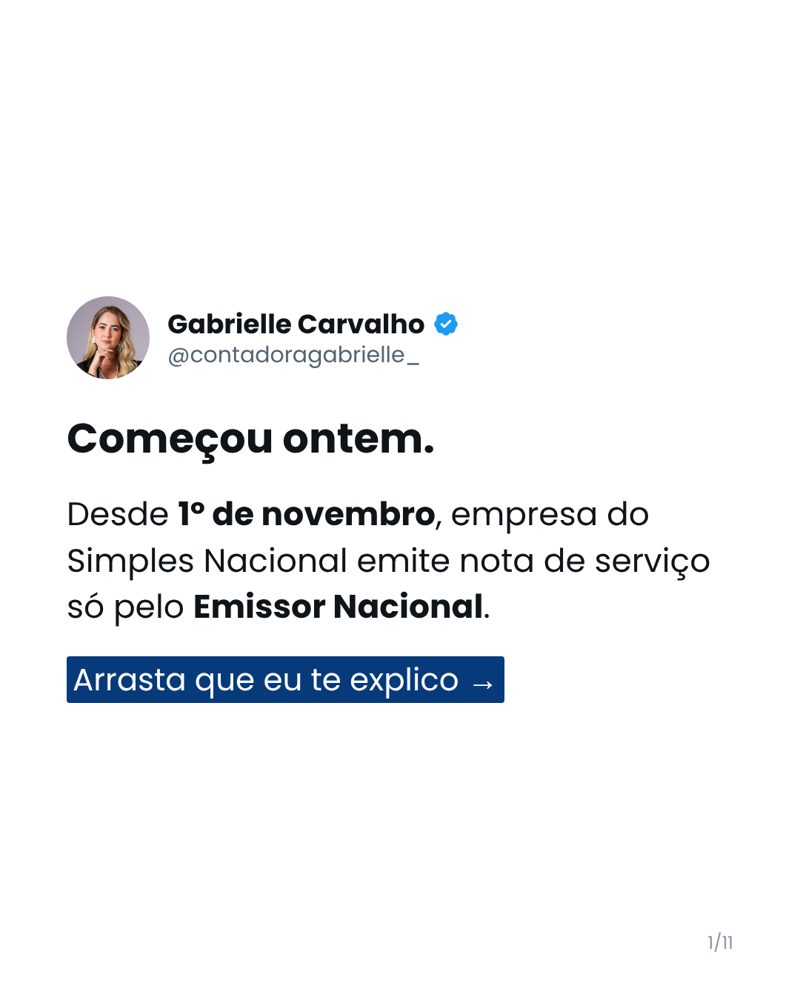
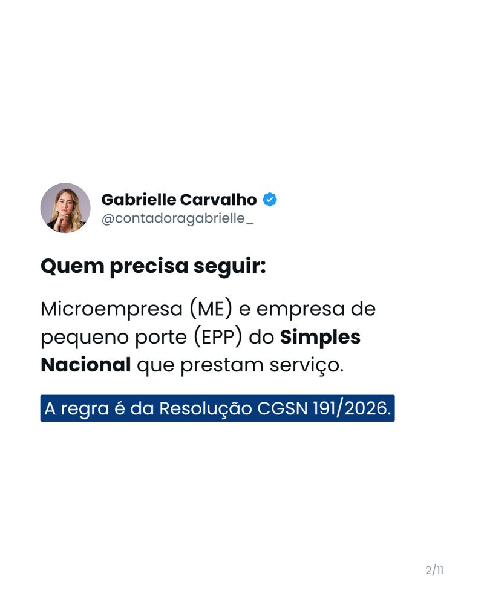
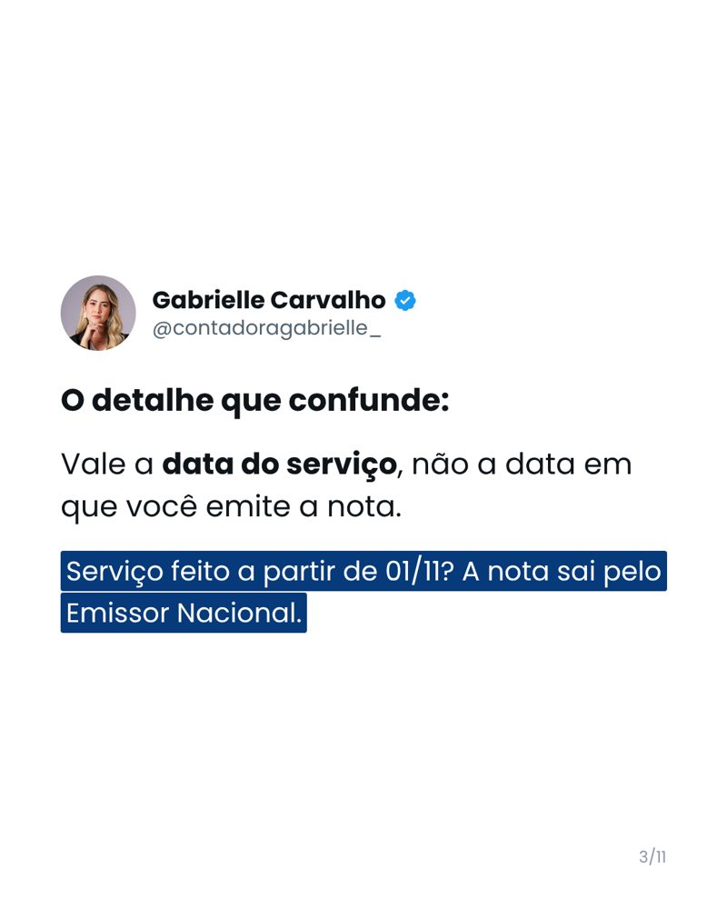
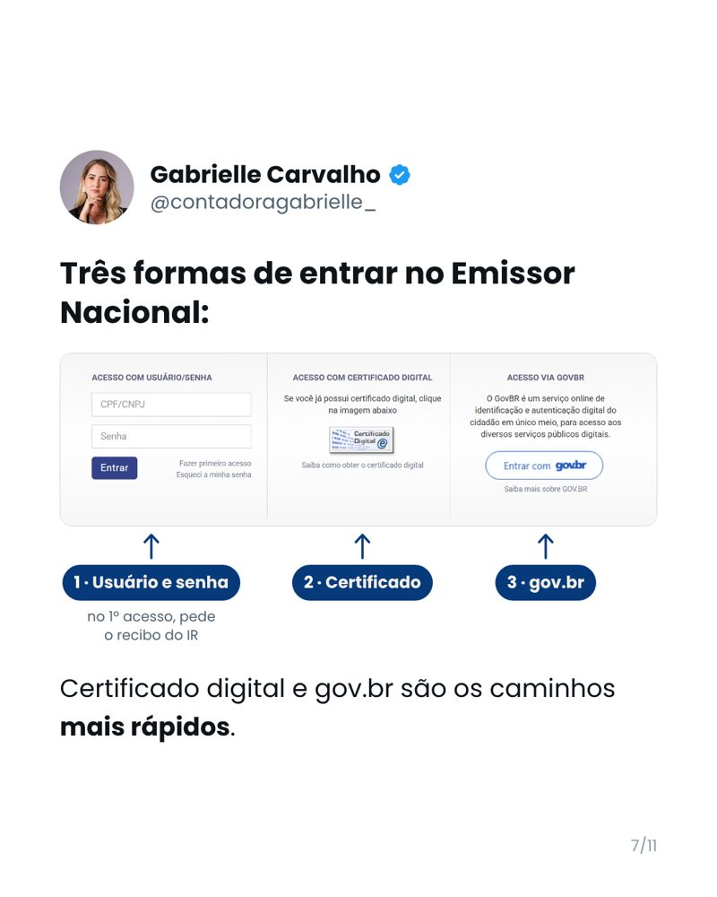
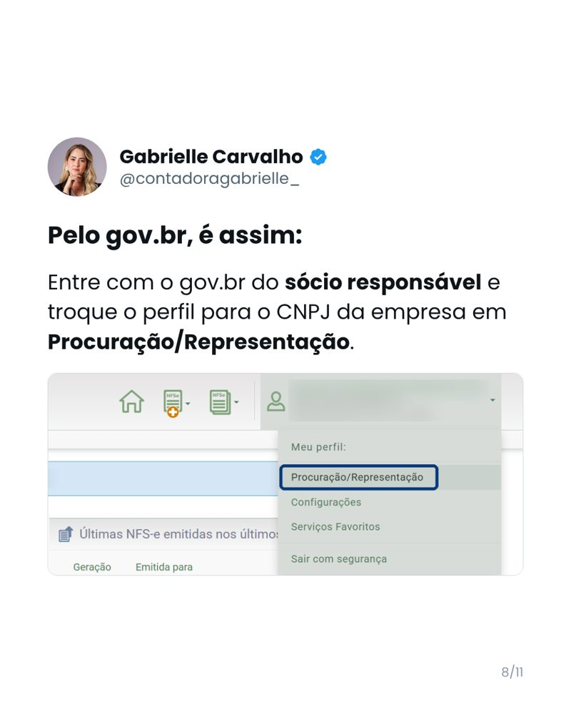

NFS-e: desde 1º de novembro, o Simples Nacional emite nota só pelo Emissor Nacional





Desde 1º de novembro, as empresas do Simples Nacional emitem nota fiscal de serviço só pelo Emissor Nacional.
Quem precisa seguir
Microempresas (ME) e empresas de pequeno porte (EPP) do Simples Nacional que prestam serviço. A regra é da Resolução CGSN nº 191/2026.
O detalhe que confunde
Vale a data do serviço, e não a data em que você emite a nota. Serviço feito a partir de 01/11 sai pelo Emissor Nacional. Serviço feito até 31/10 ainda pode sair pelo sistema da prefeitura.
E os outros regimes?
MEI: já usa o Emissor Nacional desde setembro de 2023, então nada muda. Lucro Presumido e Real: ainda não há data nacional; seguem a regra de cada município.
Como entrar no Emissor Nacional
- Certificado digital ou gov.br são os caminhos mais rápidos. Pelo gov.br, entre com a conta do sócio responsável e troque o perfil para o CNPJ em Procuração/Representação.
- Usuário e senha: no primeiro acesso, informe o CNPJ, o CPF do responsável, a data de nascimento e o número do recibo das duas últimas declarações do IR. Depois cadastre e-mail e senha e confirme o código enviado por e-mail.
E tem um lado bom: o Emissor Nacional é igual em qualquer cidade, pede menos campos e permite salvar os serviços que você mais usa.
Dica: faça um teste antes de precisar emitir. Se travar, chama a gente.
Fonte: gov.br/nfse, 29/10/2026 · Resolução CGSN nº 191/2026.